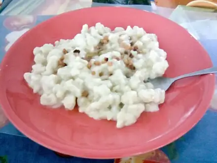
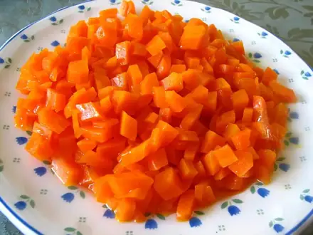

Дешёвые рецепты из простых продуктов
Бюджетные блюда из того, что продаётся в любом магазине. 270 рецептов: у каждого время, калории и БЖУ на порцию, пошаговые инструкции и список покупок
 Яичница-глазунья с помидорами10 мин · 243 ккал · Б 15 г · Завтрак
Яичница-глазунья с помидорами10 мин · 243 ккал · Б 15 г · Завтрак Яйца всмятку и в мешочек10 мин · 173 ккал · Б 14 г · Завтрак
Яйца всмятку и в мешочек10 мин · 173 ккал · Б 14 г · Завтрак Манная каша10 мин · 307 ккал · Б 10 г · Завтрак
Манная каша10 мин · 307 ккал · Б 10 г · Завтрак Кускус10 мин · 233 ккал · Б 6 г · Гарнир
Кускус10 мин · 233 ккал · Б 6 г · Гарнир Салат из свежих овощей10 мин · 130 ккал · Б 2 г · Салат
Салат из свежих овощей10 мин · 130 ккал · Б 2 г · Салат Морковь с чесноком и сыром10 мин · 279 ккал · Б 11 г · Салат
Морковь с чесноком и сыром10 мин · 279 ккал · Б 11 г · Салат Ачичук10 мин · 41 ккал · Б 2 г · Салат
Ачичук10 мин · 41 ккал · Б 2 г · Салат Творог с зеленью10 мин · 237 ккал · Б 27 г · Закуска
Творог с зеленью10 мин · 237 ккал · Б 27 г · Закуска Овсяная каша на молоке12 мин · 347 ккал · Б 12 г · Завтрак
Овсяная каша на молоке12 мин · 347 ккал · Б 12 г · Завтрак Овсяноблин15 мин · 339 ккал · Б 18 г · Завтрак
Овсяноблин15 мин · 339 ккал · Б 18 г · Завтрак Гренки сладкие15 мин · 279 ккал · Б 9 г · Завтрак
Гренки сладкие15 мин · 279 ккал · Б 9 г · Завтрак Мацебрай15 мин · 368 ккал · Б 15 г · Завтрак
Мацебрай15 мин · 368 ккал · Б 15 г · Завтрак Гренки из чёрствого хлеба с чесноком15 мин · 317 ккал · Б 6 г · Закуска
Гренки из чёрствого хлеба с чесноком15 мин · 317 ккал · Б 6 г · Закуска Омлет с остатками овощей15 мин · 361 ккал · Б 18 г · Завтрак
Омлет с остатками овощей15 мин · 361 ккал · Б 18 г · Завтрак Крабовые палочки в кляре15 мин · 439 ккал · Б 21 г · Второе блюдо
Крабовые палочки в кляре15 мин · 439 ккал · Б 21 г · Второе блюдо Спагетти аглио-олио с чесноком и перцем15 мин · 581 ккал · Б 11 г · Второе блюдо
Спагетти аглио-олио с чесноком и перцем15 мин · 581 ккал · Б 11 г · Второе блюдо Лапша с чесноком, соевым соусом и зелёным луком15 мин · 648 ккал · Б 23 г · Второе блюдо
Лапша с чесноком, соевым соусом и зелёным луком15 мин · 648 ккал · Б 23 г · Второе блюдо Китайский суп с яйцом и помидорами15 мин · 183 ккал · Б 9 г · Суп
Китайский суп с яйцом и помидорами15 мин · 183 ккал · Б 9 г · Суп Жареная гречка с яйцом и луком15 мин · 445 ккал · Б 16 г · Второе блюдо
Жареная гречка с яйцом и луком15 мин · 445 ккал · Б 16 г · Второе блюдо Сосиски в лаваше с сыром на сковороде15 мин · 643 ккал · Б 30 г · Второе блюдо
Сосиски в лаваше с сыром на сковороде15 мин · 643 ккал · Б 30 г · Второе блюдо Омлет с тунцом и помидорами15 мин · 348 ккал · Б 37 г · Второе блюдо
Омлет с тунцом и помидорами15 мин · 348 ккал · Б 37 г · Второе блюдо Тамагояки - японский омлет-рулет15 мин · 270 ккал · Б 18 г · Второе блюдо
Тамагояки - японский омлет-рулет15 мин · 270 ккал · Б 18 г · Второе блюдо Яйца с помидорами по-китайски15 мин · 338 ккал · Б 16 г · Второе блюдо
Яйца с помидорами по-китайски15 мин · 338 ккал · Б 16 г · Второе блюдо Яичница в кольцах болгарского перца15 мин · 349 ккал · Б 21 г · Второе блюдо
Яичница в кольцах болгарского перца15 мин · 349 ккал · Б 21 г · Второе блюдо Омлет с сосисками на сковороде15 мин · 445 ккал · Б 23 г · Второе блюдо
Омлет с сосисками на сковороде15 мин · 445 ккал · Б 23 г · Второе блюдо Омлет с крабовыми палочками15 мин · 360 ккал · Б 24 г · Второе блюдо
Омлет с крабовыми палочками15 мин · 360 ккал · Б 24 г · Второе блюдо Омлет Пуляр - пышный французский омлет15 мин · 278 ккал · Б 14 г · Второе блюдо
Омлет Пуляр - пышный французский омлет15 мин · 278 ккал · Б 14 г · Второе блюдо Анда бхурджи - яичница-болтунья по-индийски15 мин · 342 ккал · Б 19 г · Второе блюдо
Анда бхурджи - яичница-болтунья по-индийски15 мин · 342 ккал · Б 19 г · Второе блюдо Капуста, жаренная по-китайски с чесноком и соевым соусом15 мин · 246 ккал · Б 7 г · Второе блюдо
Капуста, жаренная по-китайски с чесноком и соевым соусом15 мин · 246 ккал · Б 7 г · Второе блюдо Жареные грибы с яйцом и луком15 мин · 370 ккал · Б 23 г · Второе блюдо
Жареные грибы с яйцом и луком15 мин · 370 ккал · Б 23 г · Второе блюдо Лаваш с яйцом и сыром на сковороде15 мин · 620 ккал · Б 33 г · Второе блюдо
Лаваш с яйцом и сыром на сковороде15 мин · 620 ккал · Б 33 г · Второе блюдо Тосты с фасолью в томатном соусе15 мин · 466 ккал · Б 19 г · Второе блюдо
Тосты с фасолью в томатном соусе15 мин · 466 ккал · Б 19 г · Второе блюдо Омлет на пару20 мин · 223 ккал · Б 16 г · Завтрак
Омлет на пару20 мин · 223 ккал · Б 16 г · Завтрак Макароны с сыром20 мин · 453 ккал · Б 18 г · Гарнир
Макароны с сыром20 мин · 453 ккал · Б 18 г · Гарнир Жареный рис с яйцом и овощами20 мин · 532 ккал · Б 16 г · Второе блюдо
Жареный рис с яйцом и овощами20 мин · 532 ккал · Б 16 г · Второе блюдо Морковь по-корейски20 мин · 136 ккал · Б 1 г · Салат
Морковь по-корейски20 мин · 136 ккал · Б 1 г · Салат Гаспачо20 мин · 185 ккал · Б 4 г · Суп
Гаспачо20 мин · 185 ккал · Б 4 г · Суп Жареный рис с овощами по-домашнему20 мин · 401 ккал · Б 11 г · Второе блюдо
Жареный рис с овощами по-домашнему20 мин · 401 ккал · Б 11 г · Второе блюдо Сосиски в томатном соусе с луком20 мин · 444 ккал · Б 16 г · Второе блюдо
Сосиски в томатном соусе с луком20 мин · 444 ккал · Б 16 г · Второе блюдо Хек жареный на сковороде20 мин · 292 ккал · Б 31 г · Второе блюдо
Хек жареный на сковороде20 мин · 292 ккал · Б 31 г · Второе блюдо Филе скумбрии в соевом соусе на сковороде20 мин · 283 ккал · Б 19 г · Второе блюдо
Филе скумбрии в соевом соусе на сковороде20 мин · 283 ккал · Б 19 г · Второе блюдо Паста с брокколи и чесноком20 мин · 609 ккал · Б 22 г · Второе блюдо
Паста с брокколи и чесноком20 мин · 609 ккал · Б 22 г · Второе блюдо Паста с кабачками и чесноком20 мин · 575 ккал · Б 17 г · Второе блюдо
Паста с кабачками и чесноком20 мин · 575 ккал · Б 17 г · Второе блюдо Макароны с яйцом на сковороде20 мин · 521 ккал · Б 21 г · Второе блюдо
Макароны с яйцом на сковороде20 мин · 521 ккал · Б 21 г · Второе блюдо Лапша с фаршем по-китайски20 мин · 658 ккал · Б 23 г · Второе блюдо
Лапша с фаршем по-китайски20 мин · 658 ккал · Б 23 г · Второе блюдо Цветная капуста, жаренная с яйцом20 мин · 341 ккал · Б 18 г · Второе блюдо
Цветная капуста, жаренная с яйцом20 мин · 341 ккал · Б 18 г · Второе блюдо Стручковая фасоль с яйцом20 мин · 330 ккал · Б 19 г · Второе блюдо
Стручковая фасоль с яйцом20 мин · 330 ккал · Б 19 г · Второе блюдо Салат с фасолью, ветчиной и сухариками20 мин · 513 ккал · Б 21 г · Салат
Салат с фасолью, ветчиной и сухариками20 мин · 513 ккал · Б 21 г · Салат Панцанелла с помидорами20 мин · 370 ккал · Б 8 г · Салат
Панцанелла с помидорами20 мин · 370 ккал · Б 8 г · Салат Фриттата с макаронами20 мин · 565 ккал · Б 31 г · Второе блюдо
Фриттата с макаронами20 мин · 565 ккал · Б 31 г · Второе блюдо Картофельные оладьи из вчерашнего пюре с сыром20 мин · 530 ккал · Б 17 г · Второе блюдо
Картофельные оладьи из вчерашнего пюре с сыром20 мин · 530 ккал · Б 17 г · Второе блюдо Курица из супа в сметанном соусе с чесноком20 мин · 554 ккал · Б 48 г · Второе блюдо
Курица из супа в сметанном соусе с чесноком20 мин · 554 ккал · Б 48 г · Второе блюдо Жареные макароны с овощами по-китайски20 мин · 525 ккал · Б 21 г · Второе блюдо
Жареные макароны с овощами по-китайски20 мин · 525 ккал · Б 21 г · Второе блюдо Миги - жареный хлеб с колбасками по-испански20 мин · 781 ккал · Б 28 г · Второе блюдо
Миги - жареный хлеб с колбасками по-испански20 мин · 781 ккал · Б 28 г · Второе блюдо Браткартофель - жареная отварная картошка с беконом20 мин · 596 ккал · Б 17 г · Второе блюдо
Браткартофель - жареная отварная картошка с беконом20 мин · 596 ккал · Б 17 г · Второе блюдо Горячие бутерброды с фаршем на сковороде20 мин · 773 ккал · Б 31 г · Второе блюдо
Горячие бутерброды с фаршем на сковороде20 мин · 773 ккал · Б 31 г · Второе блюдо Куриная печень в соевом соусе с имбирём20 мин · 328 ккал · Б 33 г · Второе блюдо
Куриная печень в соевом соусе с имбирём20 мин · 328 ккал · Б 33 г · Второе блюдо Сосиски в кляре на сковороде20 мин · 552 ккал · Б 18 г · Второе блюдо
Сосиски в кляре на сковороде20 мин · 552 ккал · Б 18 г · Второе блюдо Тунец с фасолью в томатном соусе20 мин · 446 ккал · Б 38 г · Второе блюдо
Тунец с фасолью в томатном соусе20 мин · 446 ккал · Б 38 г · Второе блюдо Оладьи из рыбных консервов20 мин · 598 ккал · Б 39 г · Второе блюдо
Оладьи из рыбных консервов20 мин · 598 ккал · Б 39 г · Второе блюдо Омлет с грибами и сыром20 мин · 394 ккал · Б 26 г · Второе блюдо
Омлет с грибами и сыром20 мин · 394 ккал · Б 26 г · Второе блюдо Чижи-пижи - яйца с луком по-грузински20 мин · 348 ккал · Б 19 г · Второе блюдо
Чижи-пижи - яйца с луком по-грузински20 мин · 348 ккал · Б 19 г · Второе блюдо Паста с сардинами и помидорами20 мин · 705 ккал · Б 41 г · Второе блюдо
Паста с сардинами и помидорами20 мин · 705 ккал · Б 41 г · Второе блюдо Нут со шпинатом по-испански с чесноком и паприкой20 мин · 378 ккал · Б 15 г · Второе блюдо
Нут со шпинатом по-испански с чесноком и паприкой20 мин · 378 ккал · Б 15 г · Второе блюдо Кабачки с помидорами и чесноком на сковороде20 мин · 329 ккал · Б 4 г · Второе блюдо
Кабачки с помидорами и чесноком на сковороде20 мин · 329 ккал · Б 4 г · Второе блюдо Шампиньоны в сметане с луком20 мин · 439 ккал · Б 14 г · Второе блюдо
Шампиньоны в сметане с луком20 мин · 439 ккал · Б 14 г · Второе блюдо Нут с кабачком и перцем на сковороде20 мин · 412 ккал · Б 13 г · Второе блюдо
Нут с кабачком и перцем на сковороде20 мин · 412 ккал · Б 13 г · Второе блюдо Гречневая каша с молоком25 мин · 272 ккал · Б 11 г · Завтрак
Гречневая каша с молоком25 мин · 272 ккал · Б 11 г · Завтрак Гречка рассыпчатая25 мин · 156 ккал · Б 6 г · Гарнир
Гречка рассыпчатая25 мин · 156 ккал · Б 6 г · Гарнир Рис рассыпчатый25 мин · 194 ккал · Б 3 г · Гарнир
Рис рассыпчатый25 мин · 194 ккал · Б 3 г · Гарнир Кабачки жареные с чесноком25 мин · 264 ккал · Б 3 г · Закуска
Кабачки жареные с чесноком25 мин · 264 ккал · Б 3 г · Закуска Паста с томатным соусом25 мин · 479 ккал · Б 13 г · Второе блюдо
Паста с томатным соусом25 мин · 479 ккал · Б 13 г · Второе блюдо Форшмак из сельди25 мин · 234 ккал · Б 13 г · Закуска
Форшмак из сельди25 мин · 234 ккал · Б 13 г · Закуска Паста с тунцом25 мин · 518 ккал · Б 26 г · Второе блюдо
Паста с тунцом25 мин · 518 ккал · Б 26 г · Второе блюдо Сырный омлет-фриттата25 мин · 354 ккал · Б 24 г · Завтрак
Сырный омлет-фриттата25 мин · 354 ккал · Б 24 г · Завтрак Пюре из кабачка и цветной капусты25 мин · 46 ккал · Б 2 г · Гарнир
Пюре из кабачка и цветной капусты25 мин · 46 ккал · Б 2 г · Гарнир Протеиновые блины на твороге25 мин · 344 ккал · Б 29 г · Завтрак
Протеиновые блины на твороге25 мин · 344 ккал · Б 29 г · Завтрак Салат из курицы из супа25 мин · 369 ккал · Б 31 г · Салат
Салат из курицы из супа25 мин · 369 ккал · Б 31 г · Салат Оладьи из вчерашнего риса25 мин · 380 ккал · Б 10 г · Завтрак
Оладьи из вчерашнего риса25 мин · 380 ккал · Б 10 г · Завтрак Куриные отбивные в кляре25 мин · 428 ккал · Б 54 г · Второе блюдо
Куриные отбивные в кляре25 мин · 428 ккал · Б 54 г · Второе блюдо Куриная печень с яблоками и луком25 мин · 438 ккал · Б 34 г · Второе блюдо
Куриная печень с яблоками и луком25 мин · 438 ккал · Б 34 г · Второе блюдо Курица по-мексикански с фасолью и кукурузой25 мин · 320 ккал · Б 37 г · Второе блюдо
Курица по-мексикански с фасолью и кукурузой25 мин · 320 ккал · Б 37 г · Второе блюдо Говяжья печень жареная с луком25 мин · 375 ккал · Б 32 г · Второе блюдо
Говяжья печень жареная с луком25 мин · 375 ккал · Б 32 г · Второе блюдо Скумбрия жареная на сковороде25 мин · 342 ккал · Б 24 г · Второе блюдо
Скумбрия жареная на сковороде25 мин · 342 ккал · Б 24 г · Второе блюдо Паста путтанеска с маслинами25 мин · 579 ккал · Б 13 г · Второе блюдо
Паста путтанеска с маслинами25 мин · 579 ккал · Б 13 г · Второе блюдо Макароны с сосисками в томатном соусе25 мин · 612 ккал · Б 20 г · Второе блюдо
Макароны с сосисками в томатном соусе25 мин · 612 ккал · Б 20 г · Второе блюдо Молодой картофель с укропом и чесноком25 мин · 338 ккал · Б 6 г · Второе блюдо
Молодой картофель с укропом и чесноком25 мин · 338 ккал · Б 6 г · Второе блюдо Чана масала (нут в томатном соусе)25 мин · 386 ккал · Б 15 г · Второе блюдо
Чана масала (нут в томатном соусе)25 мин · 386 ккал · Б 15 г · Второе блюдо Тофу по-корейски в остром соусе (дубу чорим)25 мин · 323 ккал · Б 18 г · Второе блюдо
Тофу по-корейски в остром соусе (дубу чорим)25 мин · 323 ккал · Б 18 г · Второе блюдо Яичное карри (яйца в соусе карри)25 мин · 454 ккал · Б 24 г · Второе блюдо
Яичное карри (яйца в соусе карри)25 мин · 454 ккал · Б 24 г · Второе блюдо Фасоль, тушённая с грибами25 мин · 431 ккал · Б 22 г · Второе блюдо
Фасоль, тушённая с грибами25 мин · 431 ккал · Б 22 г · Второе блюдо Фасоль по-мексикански с кукурузой и перцем25 мин · 480 ккал · Б 23 г · Второе блюдо
Фасоль по-мексикански с кукурузой и перцем25 мин · 480 ккал · Б 23 г · Второе блюдо Томатный суп-пюре с базиликом25 мин · 154 ккал · Б 3 г · Суп
Томатный суп-пюре с базиликом25 мин · 154 ккал · Б 3 г · Суп Суп с белой фасолью и шпинатом25 мин · 289 ккал · Б 15 г · Суп
Суп с белой фасолью и шпинатом25 мин · 289 ккал · Б 15 г · Суп Крем-суп из кабачков25 мин · 199 ккал · Б 4 г · Суп
Крем-суп из кабачков25 мин · 199 ккал · Б 4 г · Суп Ленивые чебуреки из лаваша с фаршем25 мин · 736 ккал · Б 31 г · Второе блюдо
Ленивые чебуреки из лаваша с фаршем25 мин · 736 ккал · Б 31 г · Второе блюдо Куриная печень, тушённая с болгарским перцем и помидорами25 мин · 365 ккал · Б 35 г · Второе блюдо
Куриная печень, тушённая с болгарским перцем и помидорами25 мин · 365 ккал · Б 35 г · Второе блюдо Куриная печень в кляре25 мин · 457 ккал · Б 38 г · Второе блюдо
Куриная печень в кляре25 мин · 457 ккал · Б 38 г · Второе блюдо Говяжья печень в сметане с луком25 мин · 465 ккал · Б 30 г · Второе блюдо
Говяжья печень в сметане с луком25 мин · 465 ккал · Б 30 г · Второе блюдо Отбивные из говяжьей печени в кляре25 мин · 456 ккал · Б 34 г · Второе блюдо
Отбивные из говяжьей печени в кляре25 мин · 456 ккал · Б 34 г · Второе блюдо Мясные оладьи из фарша25 мин · 506 ккал · Б 23 г · Второе блюдо
Мясные оладьи из фарша25 мин · 506 ккал · Б 23 г · Второе блюдо Шницель рубленый из фарша в сухарях25 мин · 541 ккал · Б 27 г · Второе блюдо
Шницель рубленый из фарша в сухарях25 мин · 541 ккал · Б 27 г · Второе блюдо Сосиски, запечённые с помидорами и сыром25 мин · 464 ккал · Б 22 г · Второе блюдо
Сосиски, запечённые с помидорами и сыром25 мин · 464 ккал · Б 22 г · Второе блюдо Котлеты из крабовых палочек с сыром25 мин · 588 ккал · Б 28 г · Второе блюдо
Котлеты из крабовых палочек с сыром25 мин · 588 ккал · Б 28 г · Второе блюдо Минтай, тушённый в молоке с луком25 мин · 321 ккал · Б 41 г · Второе блюдо
Минтай, тушённый в молоке с луком25 мин · 321 ккал · Б 41 г · Второе блюдо Несладкие сырники с зеленью и сыром25 мин · 416 ккал · Б 33 г · Второе блюдо
Несладкие сырники с зеленью и сыром25 мин · 416 ккал · Б 33 г · Второе блюдо Паста арраббьята в остром томатном соусе25 мин · 532 ккал · Б 13 г · Второе блюдо
Паста арраббьята в остром томатном соусе25 мин · 532 ккал · Б 13 г · Второе блюдо Гречка с кабачком и помидорами на сковороде25 мин · 457 ккал · Б 13 г · Второе блюдо
Гречка с кабачком и помидорами на сковороде25 мин · 457 ккал · Б 13 г · Второе блюдо Шампиньоны, тушённые в томатном соусе с луком25 мин · 261 ккал · Б 13 г · Второе блюдо
Шампиньоны, тушённые в томатном соусе с луком25 мин · 261 ккал · Б 13 г · Второе блюдо Котлеты из консервированного нута25 мин · 455 ккал · Б 15 г · Второе блюдо
Котлеты из консервированного нута25 мин · 455 ккал · Б 15 г · Второе блюдо Грибной гуляш с паприкой постный25 мин · 307 ккал · Б 15 г · Второе блюдо
Грибной гуляш с паприкой постный25 мин · 307 ккал · Б 15 г · Второе блюдо Постные котлеты из фасоли25 мин · 595 ккал · Б 23 г · Второе блюдо
Постные котлеты из фасоли25 мин · 595 ккал · Б 23 г · Второе блюдо Жареная капуста с яйцом25 мин · 402 ккал · Б 17 г · Второе блюдо
Жареная капуста с яйцом25 мин · 402 ккал · Б 17 г · Второе блюдо Баклажаны, жаренные в яйце, с чесночной сметаной25 мин · 622 ккал · Б 15 г · Второе блюдо
Баклажаны, жаренные в яйце, с чесночной сметаной25 мин · 622 ккал · Б 15 г · Второе блюдо Кабачки с грибами, тушённые с луком25 мин · 342 ккал · Б 9 г · Второе блюдо
Кабачки с грибами, тушённые с луком25 мин · 342 ккал · Б 9 г · Второе блюдо Мцване лобио: стручковая фасоль по-грузински с орехами25 мин · 408 ккал · Б 11 г · Второе блюдо
Мцване лобио: стручковая фасоль по-грузински с орехами25 мин · 408 ккал · Б 11 г · Второе блюдо Суп с сосисками и вермишелью25 мин · 245 ккал · Б 9 г · Суп
Суп с сосисками и вермишелью25 мин · 245 ккал · Б 9 г · Суп Тёплый картофельный салат с селёдкой и луком25 мин · 449 ккал · Б 21 г · Салат
Тёплый картофельный салат с селёдкой и луком25 мин · 449 ккал · Б 21 г · Салат Тёплый салат из жареных баклажанов с помидорами и чесноком25 мин · 439 ккал · Б 8 г · Салат
Тёплый салат из жареных баклажанов с помидорами и чесноком25 мин · 439 ккал · Б 8 г · Салат Рулетики из лаваша с картофельным пюре и грибами на сковороде25 мин · 457 ккал · Б 12 г · Второе блюдо
Рулетики из лаваша с картофельным пюре и грибами на сковороде25 мин · 457 ккал · Б 12 г · Второе блюдо Хачапури из батона с яйцом в духовке25 мин · 657 ккал · Б 29 г · Второе блюдо
Хачапури из батона с яйцом в духовке25 мин · 657 ккал · Б 29 г · Второе блюдо Фасоль в томатном соусе с беконом28 мин · 581 ккал · Б 32 г · Второе блюдо
Фасоль в томатном соусе с беконом28 мин · 581 ккал · Б 32 г · Второе блюдо Булгур с овощами30 мин · 272 ккал · Б 8 г · Гарнир
Булгур с овощами30 мин · 272 ккал · Б 8 г · Гарнир Куриная печень со сметаной30 мин · 502 ккал · Б 35 г · Второе блюдо
Куриная печень со сметаной30 мин · 502 ккал · Б 35 г · Второе блюдо Минтай в кляре30 мин · 366 ккал · Б 30 г · Второе блюдо
Минтай в кляре30 мин · 366 ккал · Б 30 г · Второе блюдо Табуле30 мин · 204 ккал · Б 4 г · Салат
Табуле30 мин · 204 ккал · Б 4 г · Салат Ленивые вареники30 мин · 365 ккал · Б 29 г · Завтрак
Ленивые вареники30 мин · 365 ккал · Б 29 г · Завтрак Макароны по-флотски из отварного мяса30 мин · 631 ккал · Б 34 г · Второе блюдо
Макароны по-флотски из отварного мяса30 мин · 631 ккал · Б 34 г · Второе блюдо Куриные голени в томатном соусе на сковороде30 мин · 361 ккал · Б 32 г · Второе блюдо
Куриные голени в томатном соусе на сковороде30 мин · 361 ккал · Б 32 г · Второе блюдо Хрустящие куриные крылья в духовке30 мин · 364 ккал · Б 32 г · Второе блюдо
Хрустящие куриные крылья в духовке30 мин · 364 ккал · Б 32 г · Второе блюдо Куриные сердечки жареные с луком30 мин · 408 ккал · Б 33 г · Второе блюдо
Куриные сердечки жареные с луком30 мин · 408 ккал · Б 33 г · Второе блюдо Куриные биточки с кабачком30 мин · 327 ккал · Б 25 г · Второе блюдо
Куриные биточки с кабачком30 мин · 327 ккал · Б 25 г · Второе блюдо Курица с кабачками и помидорами на сковороде30 мин · 316 ккал · Б 42 г · Второе блюдо
Курица с кабачками и помидорами на сковороде30 мин · 316 ккал · Б 42 г · Второе блюдо Печёночные оладьи из говяжьей печени30 мин · 374 ккал · Б 28 г · Второе блюдо
Печёночные оладьи из говяжьей печени30 мин · 374 ккал · Б 28 г · Второе блюдо Поджарка из свинины с луком30 мин · 572 ккал · Б 28 г · Второе блюдо
Поджарка из свинины с луком30 мин · 572 ккал · Б 28 г · Второе блюдо Рыба под маринадом (минтай с морковью и луком)30 мин · 276 ккал · Б 26 г · Второе блюдо
Рыба под маринадом (минтай с морковью и луком)30 мин · 276 ккал · Б 26 г · Второе блюдо Рыба, запечённая с омлетом, как в детском саду30 мин · 245 ккал · Б 32 г · Второе блюдо
Рыба, запечённая с омлетом, как в детском саду30 мин · 245 ккал · Б 32 г · Второе блюдо Жареная картошка с грибами30 мин · 395 ккал · Б 10 г · Второе блюдо
Жареная картошка с грибами30 мин · 395 ккал · Б 10 г · Второе блюдо Картошка с фаршем на сковороде30 мин · 487 ккал · Б 21 г · Второе блюдо
Картошка с фаршем на сковороде30 мин · 487 ккал · Б 21 г · Второе блюдо Пататас бравас (картошка в остром томатном соусе)30 мин · 390 ккал · Б 7 г · Второе блюдо
Пататас бравас (картошка в остром томатном соусе)30 мин · 390 ккал · Б 7 г · Второе блюдо Испанская тортилья с картофелем30 мин · 374 ккал · Б 13 г · Второе блюдо
Испанская тортилья с картофелем30 мин · 374 ккал · Б 13 г · Второе блюдо Жареная картошка по-грузински с кинзой30 мин · 392 ккал · Б 7 г · Второе блюдо
Жареная картошка по-грузински с кинзой30 мин · 392 ккал · Б 7 г · Второе блюдо Рис с фаршем на сковороде30 мин · 543 ккал · Б 23 г · Второе блюдо
Рис с фаршем на сковороде30 мин · 543 ккал · Б 23 г · Второе блюдо Рис по-мексикански с фасолью и кукурузой30 мин · 449 ккал · Б 14 г · Второе блюдо
Рис по-мексикански с фасолью и кукурузой30 мин · 449 ккал · Б 14 г · Второе блюдо Гречка с куриной печенью и луком30 мин · 576 ккал · Б 36 г · Второе блюдо
Гречка с куриной печенью и луком30 мин · 576 ккал · Б 36 г · Второе блюдо Гречка с овощами и соевым соусом по-азиатски30 мин · 390 ккал · Б 13 г · Второе блюдо
Гречка с овощами и соевым соусом по-азиатски30 мин · 390 ккал · Б 13 г · Второе блюдо Булгур с фаршем по-турецки30 мин · 530 ккал · Б 23 г · Второе блюдо
Булгур с фаршем по-турецки30 мин · 530 ккал · Б 23 г · Второе блюдо Пшено с курицей и овощами30 мин · 441 ккал · Б 32 г · Второе блюдо
Пшено с курицей и овощами30 мин · 441 ккал · Б 32 г · Второе блюдо Жареная картошка с сосисками и луком30 мин · 529 ккал · Б 14 г · Второе блюдо
Жареная картошка с сосисками и луком30 мин · 529 ккал · Б 14 г · Второе блюдо Булгур с грибами и луком30 мин · 415 ккал · Б 14 г · Второе блюдо
Булгур с грибами и луком30 мин · 415 ккал · Б 14 г · Второе блюдо Дал из красной чечевицы30 мин · 317 ккал · Б 17 г · Второе блюдо
Дал из красной чечевицы30 мин · 317 ккал · Б 17 г · Второе блюдо Кабачковые оладьи с сыром и чесноком30 мин · 544 ккал · Б 18 г · Второе блюдо
Кабачковые оладьи с сыром и чесноком30 мин · 544 ккал · Б 18 г · Второе блюдо Кабачки, тушённые в сметане30 мин · 446 ккал · Б 7 г · Второе блюдо
Кабачки, тушённые в сметане30 мин · 446 ккал · Б 7 г · Второе блюдо Окономияки (японская капустная лепёшка)30 мин · 497 ккал · Б 16 г · Второе блюдо
Окономияки (японская капустная лепёшка)30 мин · 497 ккал · Б 16 г · Второе блюдо Тушёная тыква с нутом по-мароккански30 мин · 295 ккал · Б 10 г · Второе блюдо
Тушёная тыква с нутом по-мароккански30 мин · 295 ккал · Б 10 г · Второе блюдо Морковные котлеты с манкой30 мин · 564 ккал · Б 16 г · Второе блюдо
Морковные котлеты с манкой30 мин · 564 ккал · Б 16 г · Второе блюдо Морковный суп-пюре с имбирём30 мин · 211 ккал · Б 3 г · Суп
Морковный суп-пюре с имбирём30 мин · 211 ккал · Б 3 г · Суп Салат с куриной печенью и солёными огурцами30 мин · 494 ккал · Б 32 г · Салат
Салат с куриной печенью и солёными огурцами30 мин · 494 ккал · Б 32 г · Салат Тёплый салат с чечевицей и фетой30 мин · 430 ккал · Б 25 г · Салат
Тёплый салат с чечевицей и фетой30 мин · 430 ккал · Б 25 г · Салат Котлеты из отварной курицы30 мин · 518 ккал · Б 41 г · Второе блюдо
Котлеты из отварной курицы30 мин · 518 ккал · Б 41 г · Второе блюдо Ленивая ачма из лаваша30 мин · 531 ккал · Б 24 г · Второе блюдо
Ленивая ачма из лаваша30 мин · 531 ккал · Б 24 г · Второе блюдо Курица адобо по-филиппински30 мин · 454 ккал · Б 38 г · Второе блюдо
Курица адобо по-филиппински30 мин · 454 ккал · Б 38 г · Второе блюдо Дак-кальби: острая курица с капустой по-корейски30 мин · 453 ккал · Б 34 г · Второе блюдо
Дак-кальби: острая курица с капустой по-корейски30 мин · 453 ккал · Б 34 г · Второе блюдо Курица с помидорами и яйцами по-азербайджански (чыгыртма)30 мин · 412 ккал · Б 49 г · Второе блюдо
Курица с помидорами и яйцами по-азербайджански (чыгыртма)30 мин · 412 ккал · Б 49 г · Второе блюдо Куриные сердечки с грибами в сливках30 мин · 476 ккал · Б 32 г · Второе блюдо
Куриные сердечки с грибами в сливках30 мин · 476 ккал · Б 32 г · Второе блюдо Свинина с кабачками и помидорами на сковороде30 мин · 478 ккал · Б 23 г · Второе блюдо
Свинина с кабачками и помидорами на сковороде30 мин · 478 ккал · Б 23 г · Второе блюдо Капуста тушёная со свининой30 мин · 393 ккал · Б 20 г · Второе блюдо
Капуста тушёная со свининой30 мин · 393 ккал · Б 20 г · Второе блюдо Котлеты в сметанном соусе на сковороде30 мин · 557 ккал · Б 26 г · Второе блюдо
Котлеты в сметанном соусе на сковороде30 мин · 557 ккал · Б 26 г · Второе блюдо Капуста с фаршем на сковороде30 мин · 399 ккал · Б 21 г · Второе блюдо
Капуста с фаршем на сковороде30 мин · 399 ккал · Б 21 г · Второе блюдо Квашеная капуста с сосисками по-немецки30 мин · 404 ккал · Б 14 г · Второе блюдо
Квашеная капуста с сосисками по-немецки30 мин · 404 ккал · Б 14 г · Второе блюдо Сосиски в слоёном тесте в духовке30 мин · 652 ккал · Б 19 г · Второе блюдо
Сосиски в слоёном тесте в духовке30 мин · 652 ккал · Б 19 г · Второе блюдо Рыба по-французски из минтая в духовке30 мин · 469 ккал · Б 44 г · Второе блюдо
Рыба по-французски из минтая в духовке30 мин · 469 ккал · Б 44 г · Второе блюдо Скумбрия, тушённая в томате с луком и морковью30 мин · 365 ккал · Б 25 г · Второе блюдо
Скумбрия, тушённая в томате с луком и морковью30 мин · 365 ккал · Б 25 г · Второе блюдо Минтай, запечённый с грибами в сметане30 мин · 413 ккал · Б 42 г · Второе блюдо
Минтай, запечённый с грибами в сметане30 мин · 413 ккал · Б 42 г · Второе блюдо Карп жареный на сковороде кусочками30 мин · 396 ккал · Б 30 г · Второе блюдо
Карп жареный на сковороде кусочками30 мин · 396 ккал · Б 30 г · Второе блюдо Драчена - русский омлет со сметаной в духовке30 мин · 299 ккал · Б 15 г · Второе блюдо
Драчена - русский омлет со сметаной в духовке30 мин · 299 ккал · Б 15 г · Второе блюдо Яйца Морне под сырным соусом30 мин · 492 ккал · Б 27 г · Второе блюдо
Яйца Морне под сырным соусом30 мин · 492 ккал · Б 27 г · Второе блюдо Котлеты из варёных яиц с сыром30 мин · 466 ккал · Б 26 г · Второе блюдо
Котлеты из варёных яиц с сыром30 мин · 466 ккал · Б 26 г · Второе блюдо Омлет как в детском саду в духовке30 мин · 337 ккал · Б 21 г · Второе блюдо
Омлет как в детском саду в духовке30 мин · 337 ккал · Б 21 г · Второе блюдо Гречка по-купечески со свининой на сковороде30 мин · 547 ккал · Б 25 г · Второе блюдо
Гречка по-купечески со свининой на сковороде30 мин · 547 ккал · Б 25 г · Второе блюдо Пшённая каша с грибами и луком30 мин · 382 ккал · Б 13 г · Второе блюдо
Пшённая каша с грибами и луком30 мин · 382 ккал · Б 13 г · Второе блюдо Тушёная картошка с курицей30 мин · 471 ккал · Б 27 г · Второе блюдо
Тушёная картошка с курицей30 мин · 471 ккал · Б 27 г · Второе блюдо Картошка, тушённая в сметане с чесноком30 мин · 387 ккал · Б 7 г · Второе блюдо
Картошка, тушённая в сметане с чесноком30 мин · 387 ккал · Б 7 г · Второе блюдо Алу гоби - картошка с цветной капустой по-индийски30 мин · 305 ккал · Б 8 г · Второе блюдо
Алу гоби - картошка с цветной капустой по-индийски30 мин · 305 ккал · Б 8 г · Второе блюдо Рёшти - швейцарская картофельная лепёшка30 мин · 412 ккал · Б 6 г · Второе блюдо
Рёшти - швейцарская картофельная лепёшка30 мин · 412 ккал · Б 6 г · Второе блюдо Картошка, тушённая с капустой30 мин · 284 ккал · Б 7 г · Второе блюдо
Картошка, тушённая с капустой30 мин · 284 ккал · Б 7 г · Второе блюдо Жареная картошка с куриной печенью и луком30 мин · 580 ккал · Б 31 г · Второе блюдо
Жареная картошка с куриной печенью и луком30 мин · 580 ккал · Б 31 г · Второе блюдо Чечевица с морковью и луком30 мин · 415 ккал · Б 21 г · Второе блюдо
Чечевица с морковью и луком30 мин · 415 ккал · Б 21 г · Второе блюдо Стручковая фасоль в томатном соусе по-гречески30 мин · 313 ккал · Б 8 г · Второе блюдо
Стручковая фасоль в томатном соусе по-гречески30 мин · 313 ккал · Б 8 г · Второе блюдо Капустная солянка с грибами на сковороде30 мин · 263 ккал · Б 9 г · Второе блюдо
Капустная солянка с грибами на сковороде30 мин · 263 ккал · Б 9 г · Второе блюдо Грибные котлеты с овсяными хлопьями постные30 мин · 408 ккал · Б 14 г · Второе блюдо
Грибные котлеты с овсяными хлопьями постные30 мин · 408 ккал · Б 14 г · Второе блюдо Рыбный суп из консервов с рисом30 мин · 263 ккал · Б 18 г · Суп
Рыбный суп из консервов с рисом30 мин · 263 ккал · Б 18 г · Суп Суп с клёцками на курином бульоне30 мин · 208 ккал · Б 8 г · Суп
Суп с клёцками на курином бульоне30 мин · 208 ккал · Б 8 г · Суп Запеканка из чёрствого хлеба с ветчиной и сыром30 мин · 588 ккал · Б 30 г · Второе блюдо
Запеканка из чёрствого хлеба с ветчиной и сыром30 мин · 588 ккал · Б 30 г · Второе блюдо Плов с курицей на сковороде30 мин · 627 ккал · Б 27 г · Второе блюдо
Плов с курицей на сковороде30 мин · 627 ккал · Б 27 г · Второе блюдо Шакшука35 мин · 361 ккал · Б 19 г · Завтрак
Шакшука35 мин · 361 ккал · Б 19 г · Завтрак Оладьи на кефире35 мин · 441 ккал · Б 13 г · Завтрак
Оладьи на кефире35 мин · 441 ккал · Б 13 г · Завтрак Запечённые яблоки с мёдом и орехами35 мин · 119 ккал · Б 1 г · Десерт
Запечённые яблоки с мёдом и орехами35 мин · 119 ккал · Б 1 г · Десерт Суп из красной чечевицы35 мин · 280 ккал · Б 14 г · Суп
Суп из красной чечевицы35 мин · 280 ккал · Б 14 г · Суп Картофельное пюре35 мин · 312 ккал · Б 6 г · Гарнир
Картофельное пюре35 мин · 312 ккал · Б 6 г · Гарнир Макароны по-флотски35 мин · 719 ккал · Б 33 г · Второе блюдо
Макароны по-флотски35 мин · 719 ккал · Б 33 г · Второе блюдо Цветная капуста в духовке35 мин · 209 ккал · Б 7 г · Гарнир
Цветная капуста в духовке35 мин · 209 ккал · Б 7 г · Гарнир Крабовый салат35 мин · 345 ккал · Б 12 г · Салат
Крабовый салат35 мин · 345 ккал · Б 12 г · Салат Постное овсяное печенье35 мин · 347 ккал · Б 6 г · Десерт
Постное овсяное печенье35 мин · 347 ккал · Б 6 г · Десерт Запеканка из макарон с сыром и яйцом35 мин · 358 ккал · Б 19 г · Второе блюдо
Запеканка из макарон с сыром и яйцом35 мин · 358 ккал · Б 19 г · Второе блюдо Муджадара (чечевица с рисом и жареным луком)35 мин · 415 ккал · Б 13 г · Второе блюдо
Муджадара (чечевица с рисом и жареным луком)35 мин · 415 ккал · Б 13 г · Второе блюдо Овсяное печенье40 мин · 284 ккал · Б 5 г · Выпечка
Овсяное печенье40 мин · 284 ккал · Б 5 г · Выпечка Окрошка на кефире40 мин · 309 ккал · Б 17 г · Суп
Окрошка на кефире40 мин · 309 ккал · Б 17 г · Суп Скумбрия в духовке40 мин · 429 ккал · Б 36 г · Второе блюдо
Скумбрия в духовке40 мин · 429 ккал · Б 36 г · Второе блюдо Драники40 мин · 445 ккал · Б 8 г · Второе блюдо
Драники40 мин · 445 ккал · Б 8 г · Второе блюдо Лечо из перца и помидоров40 мин · 204 ккал · Б 5 г · Гарнир
Лечо из перца и помидоров40 мин · 204 ккал · Б 5 г · Гарнир Фалафель40 мин · 445 ккал · Б 13 г · Второе блюдо
Фалафель40 мин · 445 ккал · Б 13 г · Второе блюдо Каша тыквенно-рисовая40 мин · 152 ккал · Б 4 г · Завтрак
Каша тыквенно-рисовая40 мин · 152 ккал · Б 4 г · Завтрак Овощной суп-пюре40 мин · 94 ккал · Б 3 г · Суп
Овощной суп-пюре40 мин · 94 ккал · Б 3 г · Суп Пшённая каша с тыквой45 мин · 290 ккал · Б 9 г · Завтрак
Пшённая каша с тыквой45 мин · 290 ккал · Б 9 г · Завтрак Блины на молоке45 мин · 379 ккал · Б 12 г · Завтрак
Блины на молоке45 мин · 379 ккал · Б 12 г · Завтрак Щи из свежей капусты45 мин · 119 ккал · Б 4 г · Суп
Щи из свежей капусты45 мин · 119 ккал · Б 4 г · Суп Рыбные котлеты45 мин · 328 ккал · Б 32 г · Второе блюдо
Рыбные котлеты45 мин · 328 ккал · Б 32 г · Второе блюдо Курица с гречкой на сковороде45 мин · 466 ккал · Б 40 г · Второе блюдо
Курица с гречкой на сковороде45 мин · 466 ккал · Б 40 г · Второе блюдо
Галушки полтавские45 мин · 556 ккал · Б 15 г · Второе блюдо Суп-лапша с курицей по-азиатски45 мин · 266 ккал · Б 30 г · Суп
Суп-лапша с курицей по-азиатски45 мин · 266 ккал · Б 30 г · Суп Куриные котлеты в духовке45 мин · 265 ккал · Б 25 г · Второе блюдо
Куриные котлеты в духовке45 мин · 265 ккал · Б 25 г · Второе блюдо Гречка по-купечески постная с грибами45 мин · 386 ккал · Б 14 г · Второе блюдо
Гречка по-купечески постная с грибами45 мин · 386 ккал · Б 14 г · Второе блюдо Зразы из вчерашнего пюре с грибами45 мин · 377 ккал · Б 10 г · Второе блюдо
Зразы из вчерашнего пюре с грибами45 мин · 377 ккал · Б 10 г · Второе блюдо Грибной суп50 мин · 163 ккал · Б 5 г · Суп
Грибной суп50 мин · 163 ккал · Б 5 г · Суп Суп с фрикадельками50 мин · 329 ккал · Б 18 г · Суп
Суп с фрикадельками50 мин · 329 ккал · Б 18 г · Суп Картофель дольками в духовке50 мин · 290 ккал · Б 5 г · Гарнир
Картофель дольками в духовке50 мин · 290 ккал · Б 5 г · Гарнир Тушёная капуста50 мин · 191 ккал · Б 6 г · Гарнир
Тушёная капуста50 мин · 191 ккал · Б 6 г · Гарнир Овощное рагу50 мин · 228 ккал · Б 5 г · Второе блюдо
Овощное рагу50 мин · 228 ккал · Б 5 г · Второе блюдо Котлеты из чечевицы50 мин · 428 ккал · Б 18 г · Второе блюдо
Котлеты из чечевицы50 мин · 428 ккал · Б 18 г · Второе блюдо Минестроне50 мин · 235 ккал · Б 8 г · Суп
Минестроне50 мин · 235 ккал · Б 8 г · Суп Тефтели из индейки на пару50 мин · 221 ккал · Б 22 г · Второе блюдо
Тефтели из индейки на пару50 мин · 221 ккал · Б 22 г · Второе блюдо Тефтели из индейки в томате50 мин · 300 ккал · Б 29 г · Второе блюдо
Тефтели из индейки в томате50 мин · 300 ккал · Б 29 г · Второе блюдо Минтай в духовке с овощами50 мин · 213 ккал · Б 26 г · Второе блюдо
Минтай в духовке с овощами50 мин · 213 ккал · Б 26 г · Второе блюдо Тонкие блины на кефире с дырочками50 мин · 433 ккал · Б 14 г · Завтрак
Тонкие блины на кефире с дырочками50 мин · 433 ккал · Б 14 г · Завтрак Грибная лапша постная50 мин · 168 ккал · Б 7 г · Суп
Грибная лапша постная50 мин · 168 ккал · Б 7 г · Суп Рыбные тефтели в сметане55 мин · 273 ккал · Б 24 г · Второе блюдо
Рыбные тефтели в сметане55 мин · 273 ккал · Б 24 г · Второе блюдо Чечевица с курицей55 мин · 338 ккал · Б 37 г · Второе блюдо
Чечевица с курицей55 мин · 338 ккал · Б 37 г · Второе блюдо Творожная запеканка60 мин · 244 ккал · Б 18 г · Завтрак
Творожная запеканка60 мин · 244 ккал · Б 18 г · Завтрак Шарлотка с яблоками60 мин · 251 ккал · Б 6 г · Выпечка
Шарлотка с яблоками60 мин · 251 ккал · Б 6 г · Выпечка Куриный суп с лапшой60 мин · 227 ккал · Б 16 г · Суп
Куриный суп с лапшой60 мин · 227 ккал · Б 16 г · Суп Оливье60 мин · 494 ккал · Б 16 г · Салат
Оливье60 мин · 494 ккал · Б 16 г · Салат Аджапсандали60 мин · 288 ккал · Б 5 г · Гарнир
Аджапсандали60 мин · 288 ккал · Б 5 г · Гарнир
Цимес морковный60 мин · 190 ккал · Б 3 г · Гарнир Крашеные яйца в луковой шелухе60 мин · 86 ккал · Б 7 г · Закуска
Крашеные яйца в луковой шелухе60 мин · 86 ккал · Б 7 г · Закуска Постные котлеты из капусты60 мин · 260 ккал · Б 7 г · Второе блюдо
Постные котлеты из капусты60 мин · 260 ккал · Б 7 г · Второе блюдо Картофельное рагу с грибами60 мин · 315 ккал · Б 10 г · Второе блюдо
Картофельное рагу с грибами60 мин · 315 ккал · Б 10 г · Второе блюдо Хлебный пудинг60 мин · 474 ккал · Б 15 г · Десерт
Хлебный пудинг60 мин · 474 ккал · Б 15 г · Десерт Куриные бёдра с картошкой в духовке65 мин · 765 ккал · Б 51 г · Второе блюдо
Куриные бёдра с картошкой в духовке65 мин · 765 ккал · Б 51 г · Второе блюдо Ленивые голубцы70 мин · 552 ккал · Б 24 г · Второе блюдо
Ленивые голубцы70 мин · 552 ккал · Б 24 г · Второе блюдо Свёкла с чесноком и орехами70 мин · 238 ккал · Б 4 г · Салат
Свёкла с чесноком и орехами70 мин · 238 ккал · Б 4 г · Салат Гефилте фиш (рыбные котлеты в бульоне)70 мин · 249 ккал · Б 34 г · Второе блюдо
Гефилте фиш (рыбные котлеты в бульоне)70 мин · 249 ккал · Б 34 г · Второе блюдо Чили кон карне70 мин · 550 ккал · Б 31 г · Второе блюдо
Чили кон карне70 мин · 550 ккал · Б 31 г · Второе блюдо Постный пирог с яблоками70 мин · 346 ккал · Б 4 г · Выпечка
Постный пирог с яблоками70 мин · 346 ккал · Б 4 г · Выпечка Винегрет75 мин · 178 ккал · Б 4 г · Салат
Винегрет75 мин · 178 ккал · Б 4 г · Салат Ленивые хинкали80 мин · 758 ккал · Б 33 г · Второе блюдо
Ленивые хинкали80 мин · 758 ккал · Б 33 г · Второе блюдо Кугель картофельный80 мин · 290 ккал · Б 7 г · Гарнир
Кугель картофельный80 мин · 290 ккал · Б 7 г · Гарнир Гороховый суп постный90 мин · 228 ккал · Б 10 г · Суп
Гороховый суп постный90 мин · 228 ккал · Б 10 г · Суп Суп с домашней лапшой токмач100 мин · 363 ккал · Б 24 г · Суп
Суп с домашней лапшой токмач100 мин · 363 ккал · Б 24 г · Суп Вареники с картошкой100 мин · 515 ккал · Б 12 г · Второе блюдо
Вареники с картошкой100 мин · 515 ккал · Б 12 г · Второе блюдо Куриные желудки тушёные100 мин · 406 ккал · Б 44 г · Второе блюдо
Куриные желудки тушёные100 мин · 406 ккал · Б 44 г · Второе блюдо Пампушки с чесноком120 мин · 347 ккал · Б 8 г · Выпечка
Пампушки с чесноком120 мин · 347 ккал · Б 8 г · Выпечка Лобио из фасоли150 мин · 426 ккал · Б 20 г · Второе блюдо
Лобио из фасоли150 мин · 426 ккал · Б 20 г · Второе блюдо Фасолевый суп постный150 мин · 160 ккал · Б 9 г · Суп
Фасолевый суп постный150 мин · 160 ккал · Б 9 г · Суп Хала180 мин · 270 ккал · Б 8 г · Выпечка
Хала180 мин · 270 ккал · Б 8 г · Выпечка Холодец из курицы с желатином180 мин · 163 ккал · Б 19 г · Закуска
Холодец из курицы с желатином180 мин · 163 ккал · Б 19 г · Закуска- Котлеты из гречневой каши30 мин · 388 ккал · Б 11 г · Второе блюдо
- Гречка с грибами и луком35 мин · 332 ккал · Б 13 г · Второе блюдо
- Кыстыбый с картофелем60 мин · 612 ккал · Б 14 г · Второе блюдо
- Рисовая запеканка с яблоком75 мин · 280 ккал · Б 8 г · Десерт
Другие подборки
- Что приготовить из курицы
- Что приготовить из фарша
- Что приготовить из мяса
- Что приготовить из рыбы
- Что приготовить из картошки
- Что приготовить из яиц
- Что приготовить из творога
- Что приготовить из кабачков
- Что приготовить из капусты
- Что приготовить из грибов
- Что приготовить из риса
- Что приготовить из макарон
- Что приготовить из гречки
- Быстрый ужин за 30 минут
- Быстрый завтрак за 20 минут
- Что приготовить на скорую руку
- ПП-рецепты: лёгкие блюда до 400 ккал
- Белковые блюда: от 25 г белка на порцию
- Что приготовить ребёнку
- Постные блюда
- Блюда на пару
- Что приготовить в духовке
- Простые супы
- Простые салаты
- Выпечка и десерты
- Блюда на праздничный стол
- Что приготовить из остатков